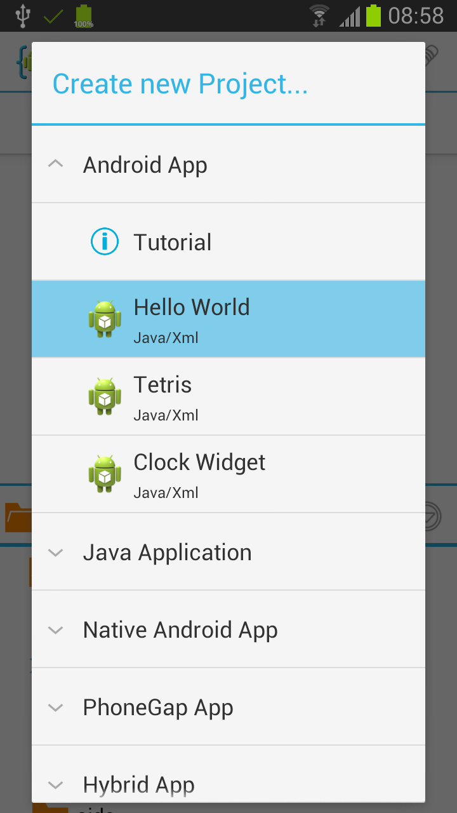
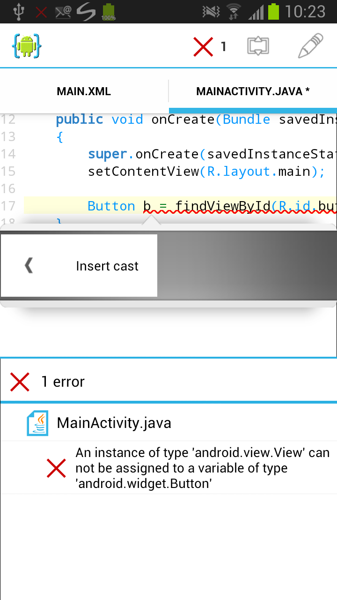
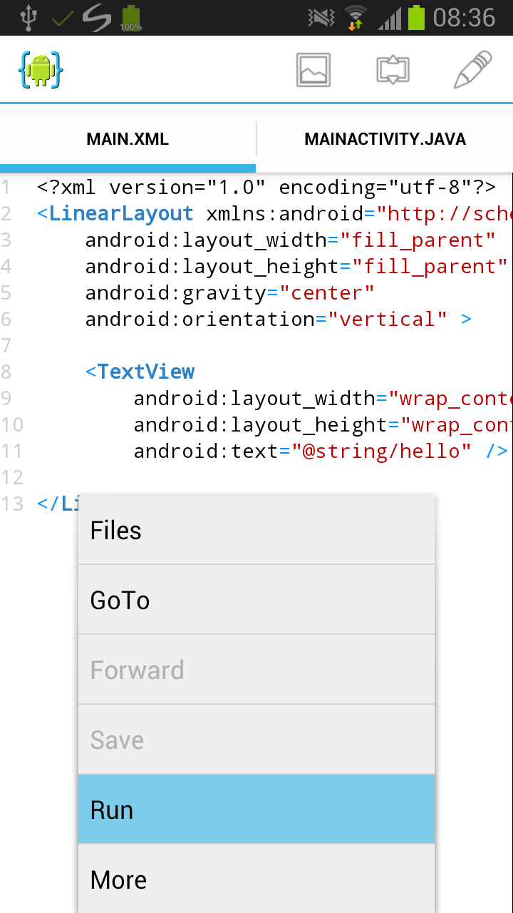

AIDE 深度盘点：手机上写 Android 应用到底能走多远
AIDE 把 Android Studio 的核心能力浓缩进了一部手机，从项目创建到 APK 签名交付一条龙。本文系统性盘点它的六大能力域，帮你判断它能覆盖多少开发场景。
想体验这款 IDE，可以先去AIDE官网看看。AIDE（Android IDE）是一款在 Android 设备上运行的集成开发环境。它不是玩具——支持 Java/XML 完整工程、Git 版本控制、NDK 原生编译、设计器预览，构建产物可以直接签名分发。对于想在通勤路上写代码、或者给手机写小工具的开发者来说，它提供了桌面级 IDE 才能有的核心体验。但手机 IDE 终究有边界，哪些场景它能独立撑起，哪些地方会让你头疼，需要认真盘点。
一、项目创建：两种主流开发路径一键就绪
AIDE 首次启动就弹出新建项目对话框，这个入口的设计比桌面 IDE 更轻量。它直接问三个问题：应用名、包名、要不要创建 Git 仓库。填完之后项目结构自动生成——src 目录放 Activity 类，res 下分 layout 和 values，AndroidManifest.xml 和 project.properties 一应俱全。Hello World 模板的 main.xml 和 MainActivity.java 会被自动打开，直接可以点 Run。

包名格式要求反向域名，AIDE 不会替你纠错但会在构建时报错。Git 仓库默认勾选，这个细节其实挺重要——即使你暂时不推远程，本地已经有了版本快照，改坏了随时回滚。设置里可以关掉这个行为，但不推荐。
更值得注意的是 AIDE 不只支持 Java/XML 标准模板，还有一个完整的 NDK 原生开发路径。选择"Android App / C/Java/Xml"模板，它自动生成 JNI 调用示例和 C/C++ 源文件；选"Android App / C/C++ Native Activity"，整个 Activity 用原生代码写。这意味着从 Java 到 C/C++ 的边界，AIDE 都能覆盖。
二、代码编辑器：手机上的智能补全和错误检查
AIDE 的代码编辑器是整个 IDE 体验的核心。它有语法高亮、行号、代码折叠——这些是基础。真正实用的是智能补全和实时错误检查：
- 写 Java 时输入
List能自动补全List<，后续会提示常见实现类和方法签名 - XML 布局文件里，敲
android:会弹出完整属性列表，颜色值可以视觉选择 - 保存文件的瞬间，错误标红，悬停提示可以直接跳到定义位置

如果只是几页代码的小应用，这个编辑器完全够用。但如果文件超过几百行，手机屏幕的物理限制就会显现——需要频繁滚动定位，多行对比 diff 会很痛苦。Premium 版本的快速修复（Quick Fix）功能能自动生成 import 语句、修复类型转换，免费版没有，遇到编译错误要手动排查。
三、UI 设计：XML 布局加设计预览
AIDE 提供了两种 UI 编辑方式。第一种是直接写 XML——这是效率最高的路径，尤其是你对 Android 布局属性很熟的情况下。第二种是设计器预览，可以在可视化界面拖拽控件、调整属性值。
设计器支持 LinearLayout、RelativeLayout、ConstraintLayout 三种主流容器，控件基本覆盖日常开发需求：Button、TextView、ImageView、EditText、ListView 都有。属性面板可以直接改文字、颜色、尺寸、边距，实时预览刷新。设计器编辑完之后，底层还是写回 XML 文件，所以两种模式可以随时切换。
这个设计器的定位很明确：快速搭建原型和调整属性。复杂的自定义 View、动画效果、ConstraintLayout 多约束排列，还是得在 XML 里手写。但对于大多数个人开发者的小型应用，设计器能省不少事。
四、构建与运行：从代码到 APK 一键闭环
AIDE 的构建流程是它最"IDE"的部分。先去AIDE下载拿安装包装到手机上，然后点 Run 按钮，内部走的流程和 Android Studio 本质一样：Java 源码经 javac 编译成 class 文件，C/C++ 代码用 NDK 编译成 .so 动态库，资源由 aapt 打包，最后 d8 + apksigner 生成签名的 APK。整个流程自动完成，构建进度在状态栏显示。
APK 默认输出到项目根目录的 bin/ 文件夹，文件名格式是 <项目名>-debug.apk。这里有个关键的区分：
| 签名类型 | 用途 | 是否可上架 |
|---|---|---|
| 调试签名 | 开发测试 | ❌ 不行 |
| 正式签名 | 分发上架 | ✅ 可以 |
调试签名用的是 AIDE 内置的 debug.keystore——所有 AIDE 用户共用同一个密钥。应用商店要求每个应用有唯一的正式签名证书，所以调试签名不能发布。正式签名（Premium 功能）需要你提供自己的 keystore 文件，AIDE 会输出正式签名的 APK，同一个签名的应用可以正常覆盖升级。

五、Git 版本控制：commit、diff 和远程同步
AIDE 内置 Git 客户端，这是它和其他手机代码编辑器最大的区别之一。文件浏览器里右键（长按）就能看到完整的 Git 操作菜单：init、status、add、commit、branch、checkout、pull、push 都有。
Commit 对话框会列出所有已修改文件，你可以勾选要包含的文件、查看 diff（绿色新增、红色删除），然后写提交信息。好的提交信息格式是"做了什么 + 为什么做"——比如"调整按钮间距为 8dp，解决紧凑模式下文字被截断的问题"，而不是"update"或"fix bug"。Diff 预览在提交前很有用，能确认有没有意外修改不该动的文件。
免费版有一个关键限制：commit 功能被锁定——更多功能差异在AIDE文档里列得很清楚。你可以看状态、看 diff、创建本地仓库，但不能提交。这意味着版本历史是断的——改坏了回不去。对于做正经项目的开发者来说，Premium 几乎是必须的。Discard 按钮可以放弃选中文件的修改，恢复到上一次 commit 的状态，操作前一定要确认。
六、NDK 原生开发：C/C++ 在手机上的编译链路
对于需要高性能计算的场景——游戏引擎、图像压缩、加密算法——Java 的性能可能不够，或者你手里已经有一套 C/C++ 库要移植到 Android。AIDE 的 NDK 支持覆盖了这种需求。
首次创建 NDK 项目时 AIDE 会提示下载移动端版本的 NDK，体积较大，建议 Wi-Fi 环境。有两种开发模式：Java + C/C++ JNI 混合（主体用 Java，通过 JNI 调用原生方法），以及纯 C/C++ Native Activity（整个 Activity 用原生代码写）。
构建流程和普通项目一样——Run 按钮一键搞定，APK 里同时包含 Java 字节码和 .so 动态库。但 NDK 项目有一个硬性限制：只能在 ARM 架构设备上运行。x86/x86_64 模拟器可以编译 Java 部分，但 C/C++ 编译会直接报错。真实 ARM 手机或平板是开发 NDK 项目的必备条件。
短板也要说
盘点完能力面，得说说 AIDE 不擅长什么。
免费版功能阉割较多：commit、快速修复、正式签名 APK、Dropbox 同步——这些都是 Premium 的核心卖点。免费版能用但限制明显，如果你真要做项目，Premium 几乎不可避免。
大型项目性能存疑：代码量超过几千行的项目，编辑器的响应速度、设计器的预览刷新、Git 操作的耗时都会明显变慢。手机的 CPU 和内存和桌面级还是有差距，AIDE 再优化也绕不开硬件限制。
NDK 项目架构限制：只能 ARM，x86 模拟器直接报错。如果你主要在模拟器上调试（很多开发者的日常），NDK 开发在 AIDE 上基本废了。
无 Kotlin 支持：AIDE 目前只支持 Java。Android 官方已经把 Kotlin 设为首选语言，大量新项目用 Kotlin 编写，AIDE 完全不支持意味着你没法在手机上写现代 Android 代码。
什么样的人该用它
综合盘点下来，AIDE 的用户画像其实挺清晰：
想在碎片时间写小工具的业余开发者。通勤路上、午休间隙，掏手机写个记账 App、待办清单、小工具，AIDE 的轻量启动和完整构建链路能让你在几十分钟内完成一个可运行的原型。Hello World 起步到 APK 生成一条龙，不需要电脑。
学习 Android 开发的入门者。AIDE 的项目模板、自动生成的文件结构、中文文档的解释，比 Android Studio 更友好。免费版的功能足够覆盖基础知识——Activity 生命周期、XML 布局、简单的 UI 交互。等你需要 Kotlin 或大型项目，再切到桌面 IDE 也不迟。
已有 C/C++ 库需要快速移植的开发者。如果你手里有跨平台的原生代码，只是想在 Android 上验证一下能不能跑起来，AIDE 的 NDK 支持比 Android Studio 更快上手——不需要配置复杂的 SDK/NDK 路径，手机上直接编译运行。
但如果你是全职 Android 开发者、团队协作需要严格的版本管理和代码审查、项目已经超过几千行、或者用 Kotlin 作为主力语言——AIDE 不适合作为主力 IDE，它更像一个补充工具，在你离开电脑的时候还能继续推进一点进度。
AIDE 的定位一直很清晰：不是要取代 Android Studio，而是在手机上提供一个真正能用的开发环境。它把 IDE 的核心能力浓缩到了一部手机里——项目创建、代码编辑、UI 设计、构建签名、版本控制，这几个核心环节一个不缺。能不能覆盖你的场景，取决于你的代码量、你的主力语言、你的项目规模，以及你对免费版功能阉割的接受程度。